✨ 精選議程
從兩場大會中挑選出視角新穎、架構完整或具代表性的議程
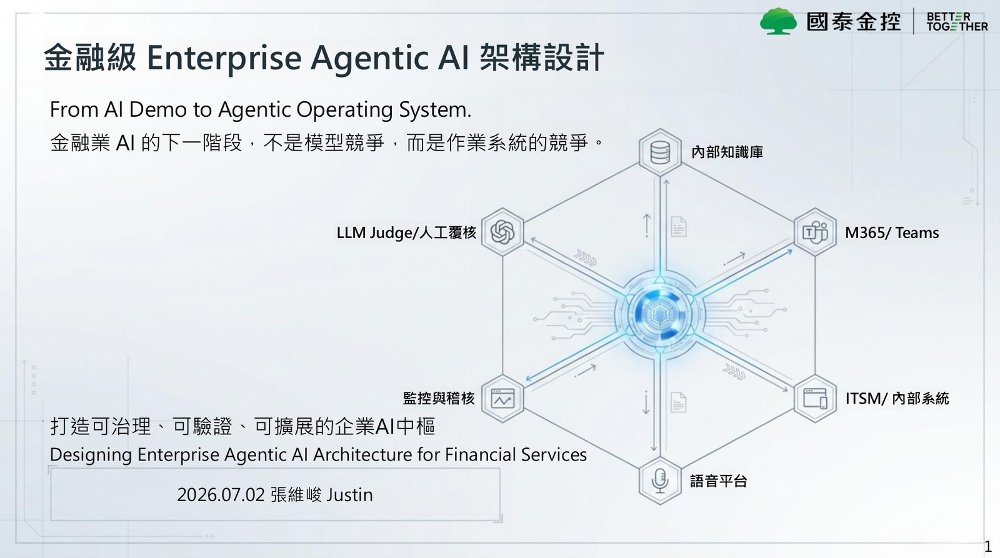
金融級 Enterprise Agentic AI 架構設計：從 PoC 到 Agentic Operating System
✨ 提出『Agentic Operating System』完整治理框架，回應金融級場景對可稽核、可信任 AI 的嚴苛要求。
講者以金融業視角提出Enterprise Agentic AI架構設計，強調金融場景要求AI具備查得到證據、能判斷證據是否足夠、不確定時拒答或追問、高風險任務升級給人、每次回答都留下Trace等硬性條件。演講說明企業AI專案常卡在PoC的三個關鍵斷點，並介紹以Agent Registry、Policy Engine、Tool Registry、Knowledge層與Evaluation/Trace構成的可治理AI Control Plane，最終目標是打造可觀測、可驗證、可稽核的Agentic Operating System。
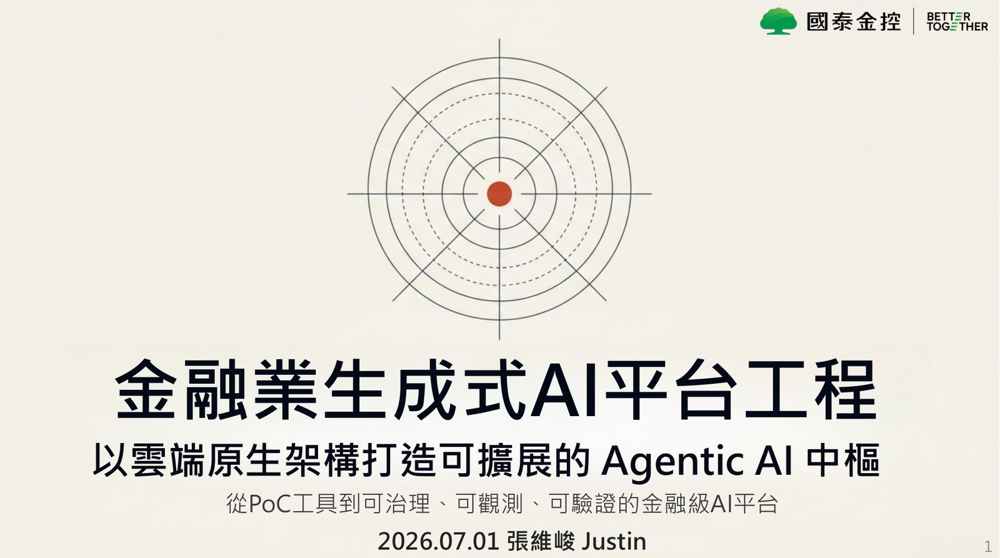
金融業生成式 AI 平台工程：以雲端原生架構打造可擴展的 Agentic AI 中樞
✨ 以 MCP、Agentic RAG 動態狀態機與 Agent Trace 打通金融業 AI 落地三條生死線，並用真實 Benchmark 數據驗證成效。
演講從金融業第一線 IT 客服場景出發，說明合規性、整合性、即時性是金融 AI 落地的三條生死線，並剖析為何 AI 專案常卡在 PoC 階段。講者提出以雲端原生架構打造的 Cloud Native AI Runtime，結合 MCP（Model Context Protocol）解決系統孤島問題、Agentic RAG 動態狀態機解決線性 RAG 的幻覺與驗證問題，並以 Agent Trace 稽核軌跡解決黑盒 AI 的稽核資安法遵挑戰，最終以真實 Benchmark 數據與語音客服案例驗證平台成效。
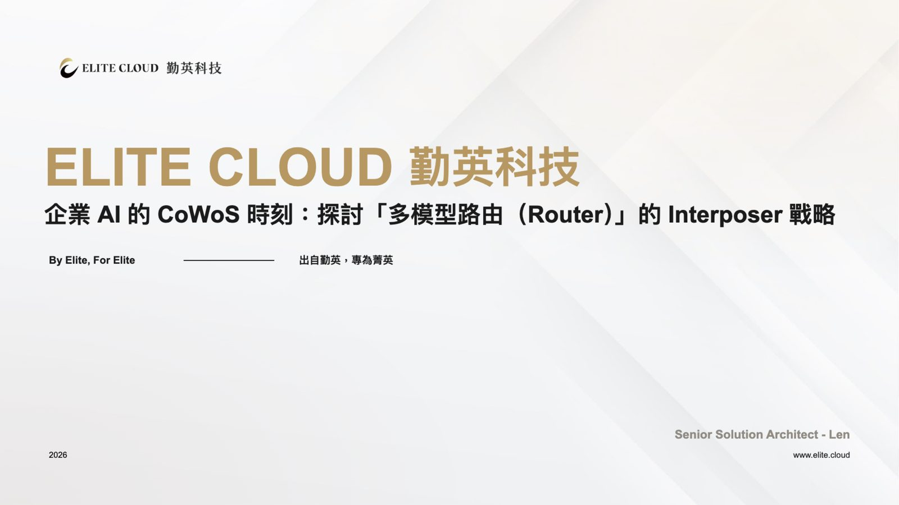
企業 AI 的 CoWoS 時刻：探討「多模型路由（Router）」的 Interposer 戰略
✨ 以半導體 CoWoS／Interposer 封裝技術類比企業多模型 AI 整合，視角新穎少見。
本議程原始投影片 PDF 缺乏可擷取文字層，以下內容依據議程提供之補充說明整理。講者以半導體 CoWoS／Interposer 封裝技術（連接多顆晶粒）類比企業多模型 AI 整合的挑戰：企業內眾多 AI 模型需要透過一層統一的「Router／Interposer」與既有系統串接，而非各自為政地直接對接。講者並介紹一款名為「MixRoute」的 AI 閘道／路由產品，作為此一戰略的具體實作。
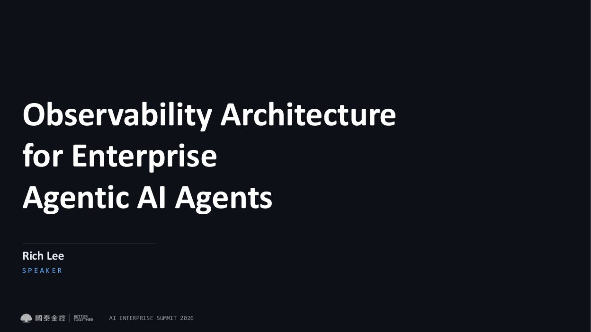
Observability Architecture for Enterprise Agentic AI Agents
✨ 把 OWASP Top 10 for Agentic AI、OpenTelemetry／OpenInference 系統化整理成企業可落地的可觀測性架構。
講者以國泰金控 DDT Center 架構師身分，說明傳統應用程式與 Agentic AI 系統在可觀測性上的根本差異：Agent 失敗往往是「沉默且機率性」的，難以像傳統服務的 500 錯誤那樣被立即發現。講題進一步介紹以 OpenTelemetry 與 OpenInference 為基礎的 Agent 專屬 Golden Signals、追蹤（Trace）架構，以及涵蓋結果與軌跡（Trajectory）的評測方法，協助企業建立可信賴的 Agentic AI 監控與評估體系。
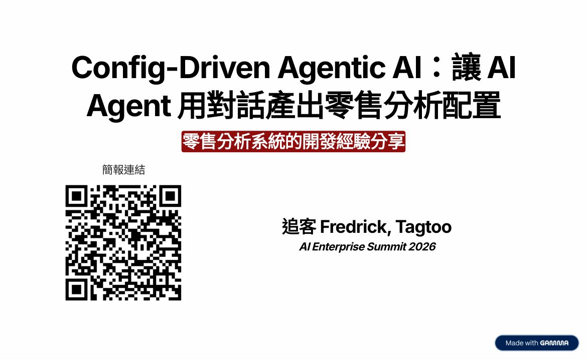
Config-Driven Agentic AI：讓 AI Agent 用對話產出零售分析配置
✨ 從『Workflow Agent』的失敗經驗，提煉出『Config-Driven』新架構模式，實戰教訓具體可借鏡。
Tagtoo分享零售分析系統的開發經驗，說明團隊如何從讓Agent直接調度整個分析流程的「Workflow Agent」架構，因遇到速度慢、成本高、穩定性差的問題，轉向以「Config Compiler」為核心的Config-Driven架構：Agent不再直接執行任務，而是產生結構化的「分析合約」，再交由固定pipeline腳本執行。演講也說明如何透過三道防線讓這套AI workflow更加穩定可靠。
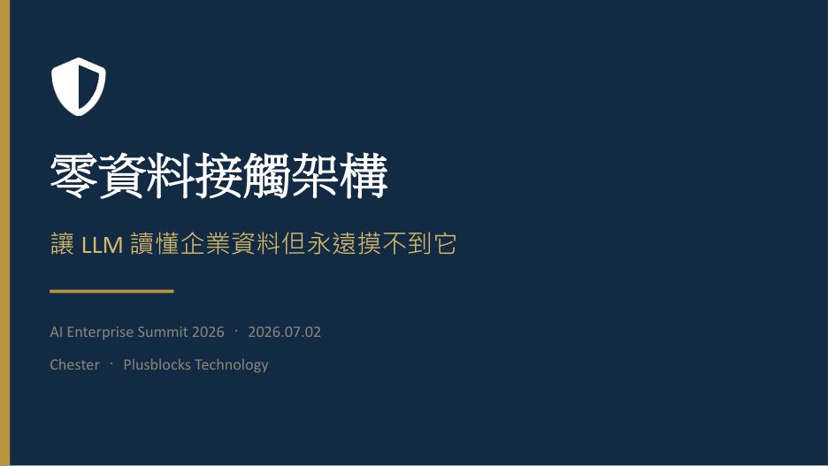
零資料接觸架構：讓 LLM 讀懂企業資料但永遠摸不到它
✨ 『零資料接觸架構（ZDTA）』以 Schema-Only 查詢代理解決 LLM 資料外洩兩難，設計巧妙。
講者 Chester 提出「零資料接觸架構（Zero Data Touch Architecture, ZDTA）」，解決企業想讓 LLM 理解內部資料、卻又害怕資料外洩與合規風險的核心矛盾。架構核心是讓 LLM 只看到資料表 Schema、由安全中間層（Query Proxy）代為執行查詢語句，再經 Result Sanitizer 脫敏聚合後才呈現給使用者，確保 LLM 全程不接觸任何一筆原始資料。
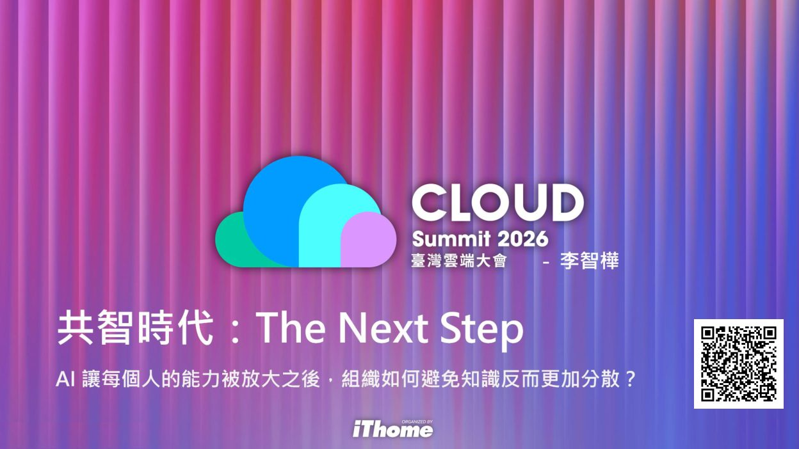
共智時代：The Next Step
✨ 跳脫工具面，從『共智』與『理解債』重新定義 AI 時代工程師的角色，觀點少見。
本場演講以 Ethan Mollick 的《Co-Intelligence》與 Steven Pinker 的《Common Knowledge》為理論基礎，探討 AI 讓每個人能力被放大後，組織要如何避免知識反而更加分散。講者提出「共智」需要進一步演化為「共同知識」，並提出理解債（Understanding Debt）與認知負荷等概念，說明 AI 時代工程師的角色如何從單純寫程式，轉變為建立人與 AI 共同知識、對系統理解負責的人。
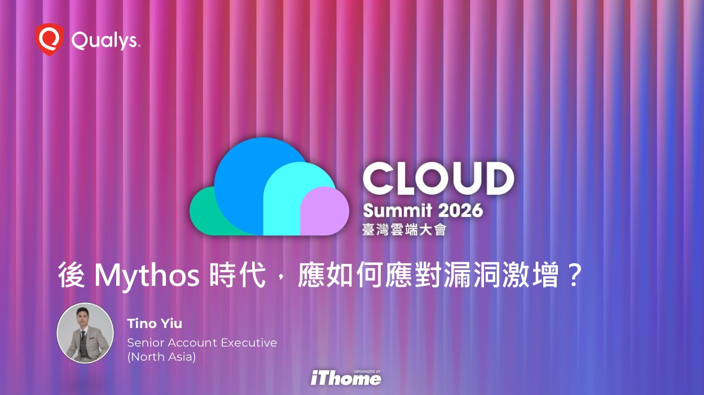
後 Mythos 時代，應如何應對漏洞激增？
✨ 揭露前沿模型自主發現零日漏洞的實例，點出漏洞管理典範轉移的緊迫性。
本場演講由 Qualys 的 Tino Yiu 主講，探討 Anthropic 的前沿模型 Mythos 能自主發現零日漏洞（包括困擾 27 年的 FFmpeg 整數溢位漏洞），並分析這對漏洞管理帶來的衝擊：CVE 揭露量將激增、利用窗口期將以小時計而非以週計。演講提出「AWE < WOW」的預防公式，並介紹 Qualys 如何透過 AI 速度偵測、超優先級處理與零日修復三大步驟來應對後 Mythos 時代的漏洞洪流。
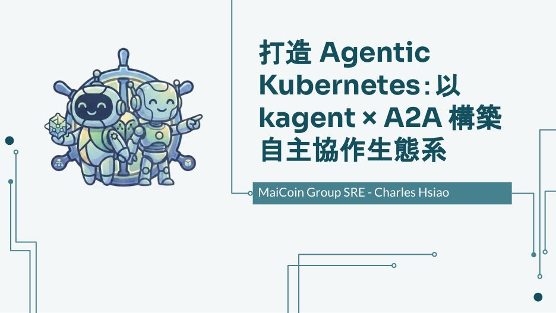
打造 Agentic Kubernetes：以 kagent × A2A 構築自主協作生態系
✨ 以開源 kagent 與 A2A 協議打造 Kubernetes 自主協作生態系，技術含金量高且可實作。
本場演講由 MaiCoin Group SRE Charles Hsiao 主講，介紹如何運用開源專案 kagent 搭配 Google 提出的 A2A（Agent-to-Agent）協議，在 Kubernetes 環境中構築多代理自主協作生態系。內容涵蓋雲原生維運從命令式、宣告式、自動化到自主化的演進路徑，深入剖析 A2A 協議的 Agent Card、Task、Message、Artifact 等核心概念，並以實際的 Agentic SRE 案例展示多 Agent 協作如何找出隱藏在告警表象之下的真正根因。
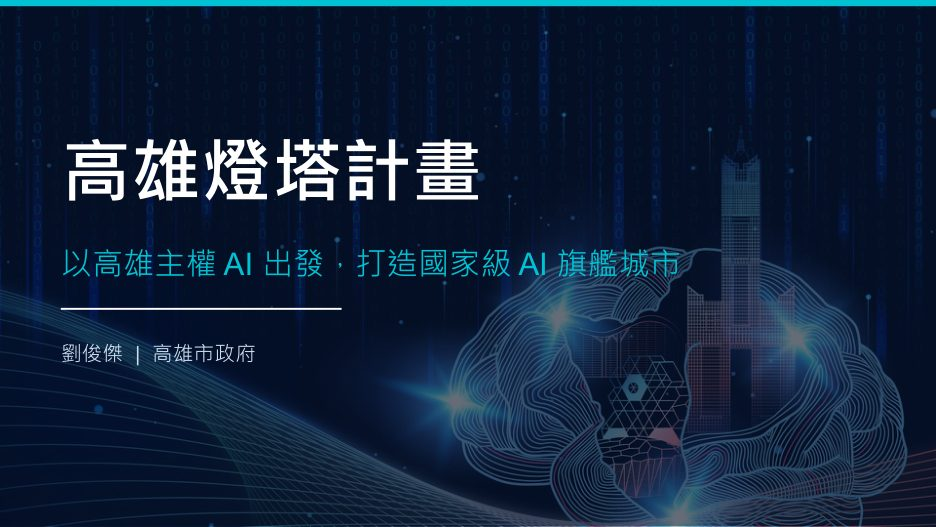
高雄 AI 燈塔計畫 - 以高雄主權 AI 出發，打造國家級 AI 旗艦城市
✨ 高雄以主權 AI VLM 與數位孿生打造國家級智慧城市旗艦案例，規模與縱深少見。
高雄市政府分享「高雄燈塔計畫」，說明如何從傳統以物件辨識為基礎、需事先設定規則的視覺 AI，演進到能理解複雜多重事件的視覺語言模型（VLM），並進一步升級至具推理能力的 Cosmos Reason 2 與結合數位孿生的 Physical AI。透過主權 AI VLM 平台整合跨局處攝影機與影像資料，取代過去各局處各自為政的人工通報模式，打造能同時滿足交通、工務、水利、警察、消防等不同需求的複合式應用。
🤖 Agentic AI 架構與導入 15 場
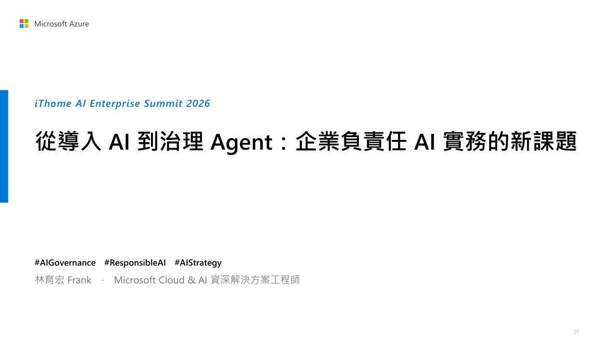
從導入 AI 到治理 Agent：企業負責任 AI 實務的新課題
講者從 Microsoft Build 2026 的核心訊息出發，說明企業導入 Agentic AI 時面臨的關鍵命題已從「AI 能做什麼」轉變為「企業敢讓 AI 自己做什麼」。講題以「信任＝邊界＋檢查點＋稽核」為框架，介紹 Microsoft 開源的 Agent Governance Toolkit（AGT）如何透過系統架構落實邊界管控、Human-in-the-loop 檢查點與可稽核追蹤，協助企業對齊歐盟 AI 法案、NIST AI RMF、OWASP Agentic AI Top 10 與 SOC 2 等標準。
企業 AI 的 CoWoS 時刻：探討「多模型路由（Router）」的 Interposer 戰略
本議程原始投影片 PDF 缺乏可擷取文字層，以下內容依據議程提供之補充說明整理。講者以半導體 CoWoS／Interposer 封裝技術（連接多顆晶粒）類比企業多模型 AI 整合的挑戰：企業內眾多 AI 模型需要透過一層統一的「Router／Interposer」與既有系統串接，而非各自為政地直接對接。講者並介紹一款名為「MixRoute」的 AI 閘道／路由產品，作為此一戰略的具體實作。
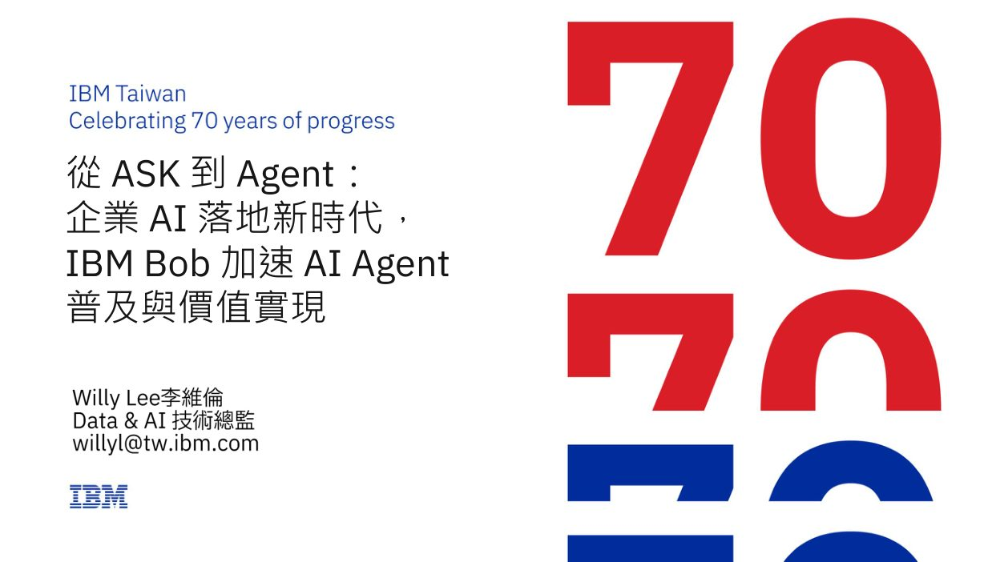
從 ASK 到 Agent：企業 AI 落地新時代，IBM Bob 加速 AI Agent 普及與價值實現
本議程原始投影片 PDF 缺乏可擷取文字層，以下內容依據議程提供之補充說明整理。講題聚焦企業 AI 應用從簡單問答式（ASK）互動邁向具自主行動能力的 Agentic AI 的轉變，並介紹 IBM 推出的「IBM Bob」——一套定位為「AI-Native SDLC Orchestrator」的架構，用以協調軟體開發生命週期中的多個 AI Agent，藉此加速企業 AI Agent 的普及與價值實現。
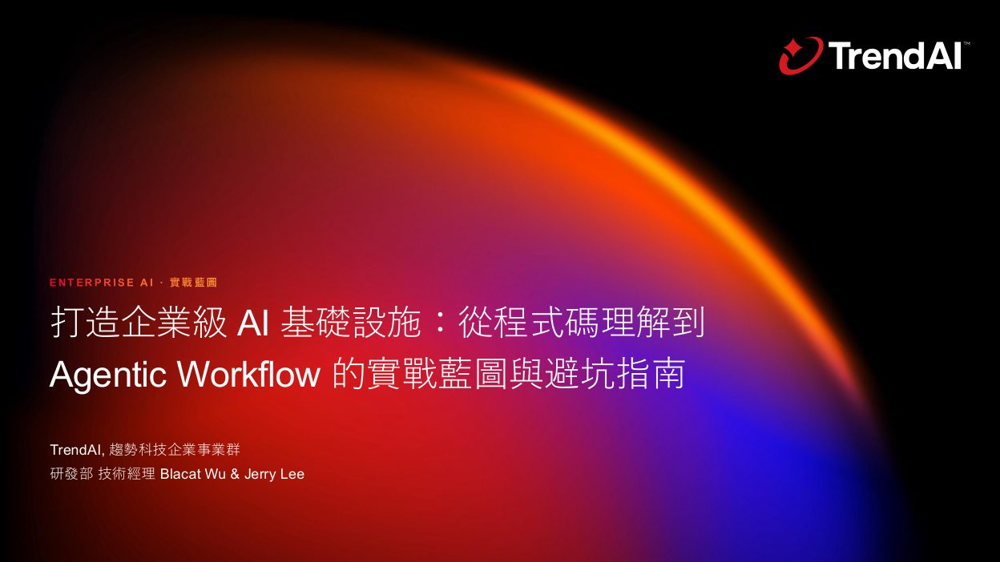
打造企業級 AI 基礎設施：從程式碼理解到 Agentic Workflow 的實戰藍圖與避坑指南
趨勢科技分享其內部AI平台 Genisys 的建置歷程，說明在橫跨 Monolith 與微服務、規模龐大到沒有人能掌握全貌的架構下，AI落地的最大瓶頸不是工具，而是如何把企業知識餵給AI（Context Engineering）。講者說明如何自建 Code Search、AI SDLC Orchestrator 與 Service Map，並分享從知識庫走向 Agentic AI Platform 過程中踩過的坑與實戰案例。
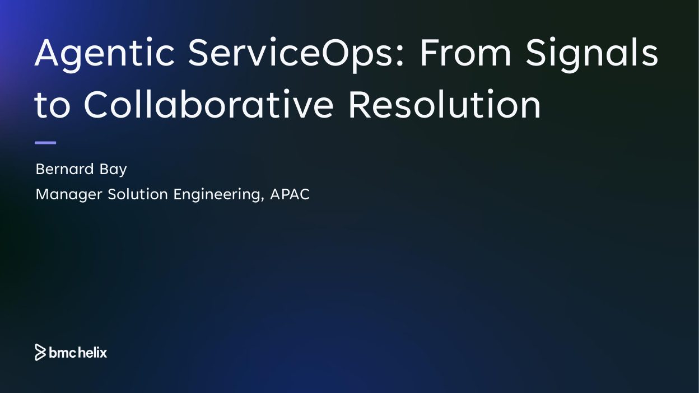
企業級代理式 AI (Agentic AI for The Enterprise)
BMC Helix 分享企業如何透過代理式AI（Agentic AI）轉型IT維運與服務管理，說明使用者與應用程式互動的模式如何從傳統點擊式操作，演進到以自然語言表達意圖、由AI自主推理與跨工具協調執行的Agentic介面。講者以 HelixGPT 平台展示多個現成代理人如何協助處理事件分析、根因調查與服務協作等場景，並附上具體的生產力與效率提升數據。
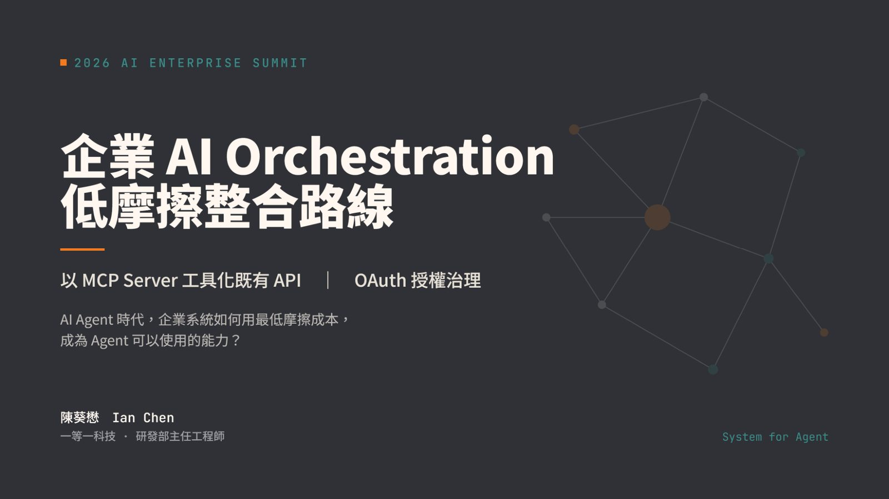
企業 AI Orchestration 低摩擦整合路線：以 MCP Server 工具化既有 API與 OAuth 授權治理
一等一科技分享一套低摩擦的企業AI整合路線，說明如何將既有企業API包裝為MCP（Model Context Protocol）Server工具，讓AI Agent能夠直接調用這些工具來完成任務，而不需要重寫既有系統。演講同時說明如何以OAuth為基礎的授權機制，讓Agent能夠代表使用者安全地呼叫企業內部API，並在治理上確保Agent行為可控、可稽核。
Config-Driven Agentic AI：讓 AI Agent 用對話產出零售分析配置
Tagtoo分享零售分析系統的開發經驗，說明團隊如何從讓Agent直接調度整個分析流程的「Workflow Agent」架構，因遇到速度慢、成本高、穩定性差的問題，轉向以「Config Compiler」為核心的Config-Driven架構：Agent不再直接執行任務，而是產生結構化的「分析合約」，再交由固定pipeline腳本執行。演講也說明如何透過三道防線讓這套AI workflow更加穩定可靠。
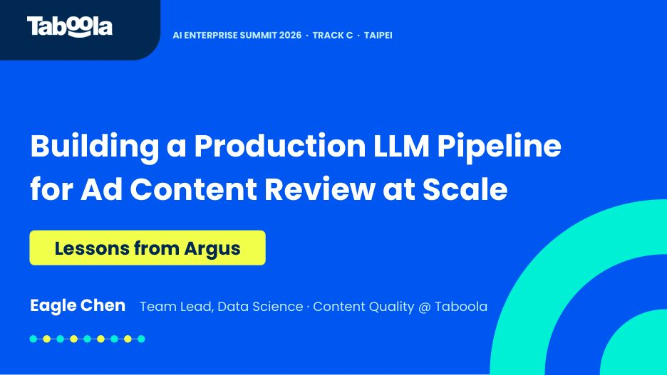
Building a Production LLM Pipeline for Ad Content Review at Scale: Lessons from Argus
Taboola的Eagle Chen分享團隊如何打造名為Argus的LLM生產Pipeline，用以在大規模場景下審查廣告內容。演講說明人工審查在一致性、時效與規模化三方面的痛點，以及傳統機器學習模型難以應對政策頻繁變動的困境，進而提出「政策即Prompt」的重新框架方式，並詳細拆解Argus以控制流、上下文、工具、記憶與CI/CD五層構成的Harness架構，最後分享換模型與成效驗證的實戰經驗。
金融級 Enterprise Agentic AI 架構設計：從 PoC 到 Agentic Operating System
講者以金融業視角提出Enterprise Agentic AI架構設計，強調金融場景要求AI具備查得到證據、能判斷證據是否足夠、不確定時拒答或追問、高風險任務升級給人、每次回答都留下Trace等硬性條件。演講說明企業AI專案常卡在PoC的三個關鍵斷點，並介紹以Agent Registry、Policy Engine、Tool Registry、Knowledge層與Evaluation/Trace構成的可治理AI Control Plane，最終目標是打造可觀測、可驗證、可稽核的Agentic Operating System。
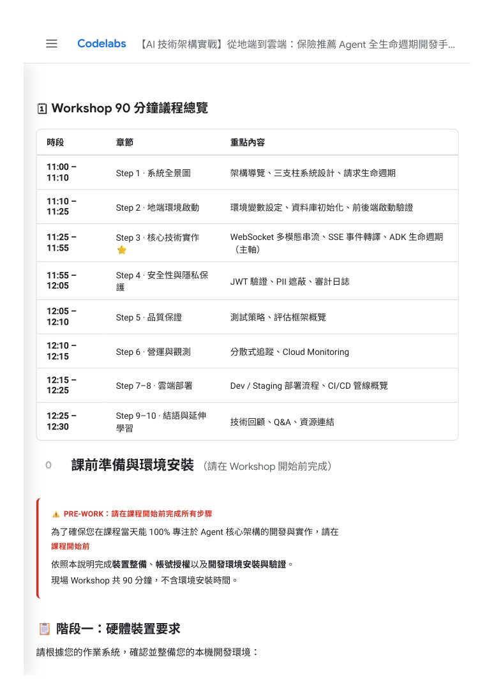
(Lab) Google ADK 即時語音串流實現 GCP 平台與 DevOps 的整合應用
這是一份 90 分鐘 Workshop 的技術架構實戰手冊，以「保險推薦 Agent」為範例，帶領學員從地端環境啟動、核心 WebSocket 多模態串流實作，到安全性與隱私保護、品質保證、營運觀測，最終走到雲端 Dev 沙盒與 Staging/Production 的 CI/CD 部署。內容涵蓋 Next.js 前端、FastAPI 搭配 Google ADK 的後端、PostgreSQL 與 pgvector 向量檢索，以及以 Terraform 與 Workload Identity Federation 打造的多環境雲原生部署流程。
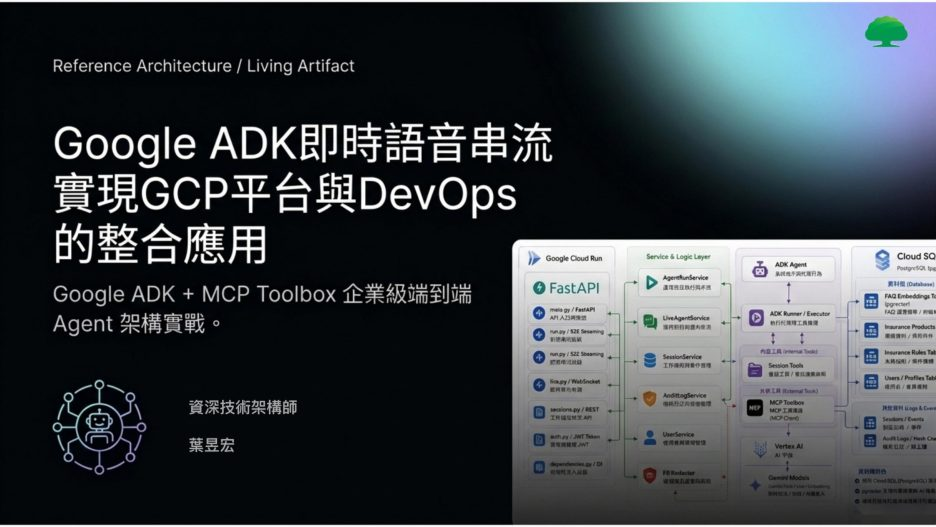
Google ADK 即時語音串流實現 GCP 平台與 DevOps 的整合應用
演講以一個保險商品推薦 Agent 為案例，拆解建構 production-ready Agent 應用所需的六個工程層次，從使用者情境定位、系統分層架構、Agent 決策與工具使用、串流與多模態互動，到安全稽核與最終雲端部署。內容展示如何以 Google ADK、MCP Toolbox、FastAPI 與 Next.js 等技術組合，打造具備會話記憶、即時語音影像互動與評測驅動開發流程的完整 Agent 系統骨架。
打造 Agentic Kubernetes：以 kagent × A2A 構築自主協作生態系
本場演講由 MaiCoin Group SRE Charles Hsiao 主講，介紹如何運用開源專案 kagent 搭配 Google 提出的 A2A（Agent-to-Agent）協議，在 Kubernetes 環境中構築多代理自主協作生態系。內容涵蓋雲原生維運從命令式、宣告式、自動化到自主化的演進路徑，深入剖析 A2A 協議的 Agent Card、Task、Message、Artifact 等核心概念，並以實際的 Agentic SRE 案例展示多 Agent 協作如何找出隱藏在告警表象之下的真正根因。
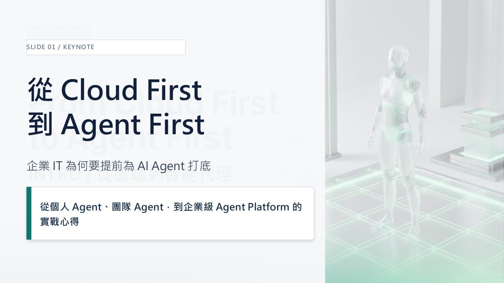
從 Cloud First 到 Agent First：企業 IT 為何要提前為 AI Agent 打底
講者以個人、團隊、企業三個層次的真實經驗，說明 AI Agent 從個人助理演進到企業級平台時所面臨的挑戰，核心論點是「Agent First 不是把 AI 接到企業裡，而是把企業變成 AI Agent 可以安全工作的地方」。講題並以國泰金控過去 Cloud Ready、Cloud Adoption、Cloud First 的上雲歷程為例，說明雲端治理累積的身份、權限、標準化基礎，其實正是企業迎接 Agent First 時代的關鍵地基。
金融業生成式 AI 平台工程：以雲端原生架構打造可擴展的 Agentic AI 中樞
演講從金融業第一線 IT 客服場景出發，說明合規性、整合性、即時性是金融 AI 落地的三條生死線，並剖析為何 AI 專案常卡在 PoC 階段。講者提出以雲端原生架構打造的 Cloud Native AI Runtime，結合 MCP（Model Context Protocol）解決系統孤島問題、Agentic RAG 動態狀態機解決線性 RAG 的幻覺與驗證問題，並以 Agent Trace 稽核軌跡解決黑盒 AI 的稽核資安法遵挑戰，最終以真實 Benchmark 數據與語音客服案例驗證平台成效。
Microsoft Agent Framework + Orleans 打造雲地協同 AI 工作流
本場演講介紹 Microsoft 開源的 AI Agent 開發框架 MAF（Microsoft Agent Framework），說明其如何以一致的 AIAgent API 控制不同 LLM 供應商，並支援 Session 管理、MCP 工具整合與多種 Workflow 協調模式。講者進一步展示如何結合 Microsoft Orleans 處理多人多狀態的高併發系統需求，並介紹 Azure AI Search 的 Agentic Retrieval 與 OpenClaw 在 .NET/C# 生態系的兩個主流實作。
📊 可觀測性、評測與資料治理 7 場
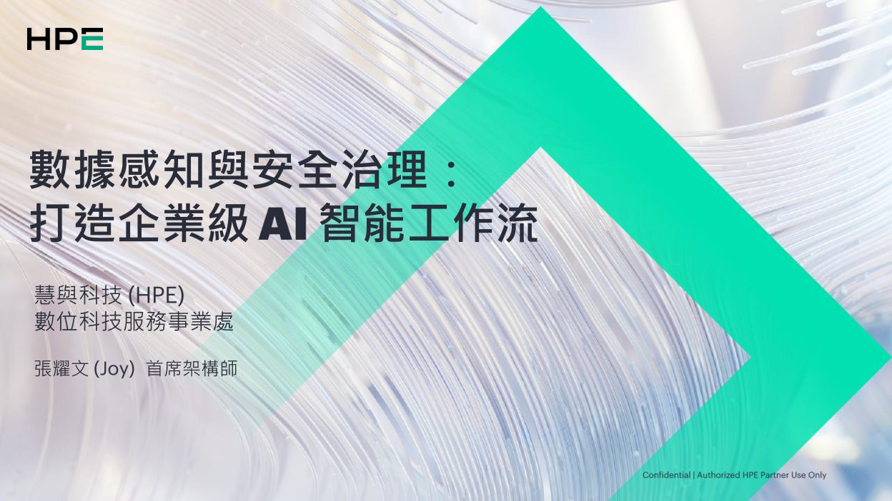
數據感知與安全治理：打造企業級 AI 智能工作流
講者以 HPE 首席架構師身分，剖析為何近三分之二企業的 AI 專案無法從試點走向正式上線，指出法規、成本與資安三大壓力是主因，並引用 Gartner AI TRiSM 框架說明企業應如何建立可解釋、可稽核的 AI 治理機制。講題也展示 HPE Private Cloud AI 搭配 DAXA 治理安全平台，如何以「Shift-Left」方式在 AI Agent 存取真實資料前就進行資料感知與政策把關。
Observability Architecture for Enterprise Agentic AI Agents
講者以國泰金控 DDT Center 架構師身分，說明傳統應用程式與 Agentic AI 系統在可觀測性上的根本差異：Agent 失敗往往是「沉默且機率性」的，難以像傳統服務的 500 錯誤那樣被立即發現。講題進一步介紹以 OpenTelemetry 與 OpenInference 為基礎的 Agent 專屬 Golden Signals、追蹤（Trace）架構，以及涵蓋結果與軌跡（Trajectory）的評測方法，協助企業建立可信賴的 Agentic AI 監控與評估體系。
LLM O11y：從 Observability 到 Decision System (Workshop)
這是一場動手實作的工作坊，講者以 Bifrost AI Gateway 與 Langfuse 搭建的 tracing／觀測環境為基礎，帶領學員理解 Coding Agent 的 Token 花費結構，並學習用 LLM-as-a-Judge、Dataset 與 Experiment 把「聽說」轉換成可驗證的數據化決策。內容涵蓋工具與 instructions 精簡、評估新框架是否真的省 Token，以及如何為 multi-turn agent 建立客製化評分機制。
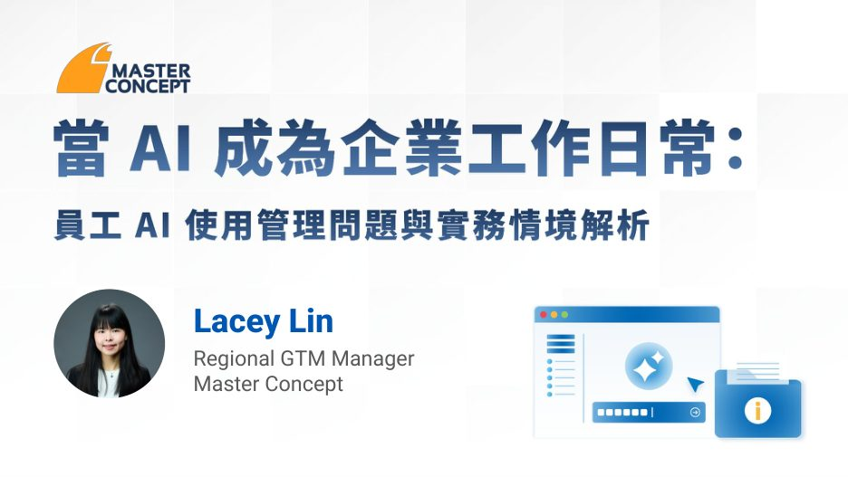
當 AI 成為企業工作日常：員工 AI 使用管理問題與實務情境解析
本場分享聚焦企業員工日常使用AI已從「要不要開放」轉變為「怎麼管理」的課題。講者將企業內的AI使用分為Web/SaaS AI、AI App、AI Agent三大類，並分別說明每一類所需的身份存取、裝置合規與授權邊界管理方式，同時提醒即使建立官方AI主路徑，仍會存在Shadow AI、帳號混用等治理缺口。最後提出建立、盤點、分類佈局三步驟，作為企業展開AI管理的起點。
LLM O11y：從 Observability 到 Decision System
講者分享如何在企業導入 LLM／Coding Agent 時，用可觀測性（Observability）取代「聽說」式決策，透過建立 baseline、LLM-as-a-Judge、Dataset & Experiment 三個步驟，逐步把工具選型、Prompt 調整、模型升級等決策數據化。核心主張是「新工具冒出速度大於人力研究速度」，唯有先看到量化數據，才能讓團隊信任現有技術堆疊並驗證每次改動的實際影響。
零資料接觸架構：讓 LLM 讀懂企業資料但永遠摸不到它
講者 Chester 提出「零資料接觸架構（Zero Data Touch Architecture, ZDTA）」，解決企業想讓 LLM 理解內部資料、卻又害怕資料外洩與合規風險的核心矛盾。架構核心是讓 LLM 只看到資料表 Schema、由安全中間層（Query Proxy）代為執行查詢語句，再經 Result Sanitizer 脫敏聚合後才呈現給使用者，確保 LLM 全程不接觸任何一筆原始資料。
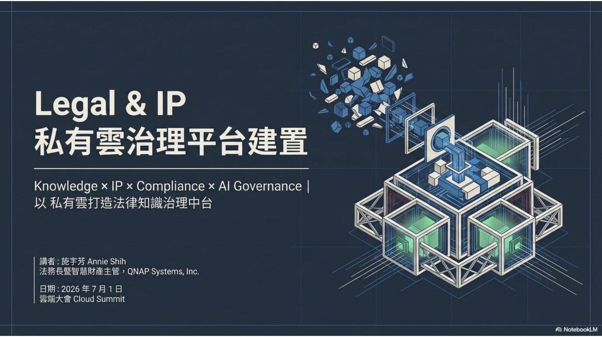
Secure GenAI on Cloud：結合 ISO 27001 × TIPS × 法遵的企業級 AI × IP × 敏感資料治理架構
演講由法務與智慧財產角度出發，說明企業導入 GenAI 時如何結合 ISO 27001 資訊安全管理制度、台灣 TIPS 智慧財產管理制度與法規遵循，建構一套兼顧創新與風險控管的企業級治理架構。內容聚焦於一套十層零信任資料治理管線，以及將 AI 可存取資料依機敏程度劃分為三個資料池的具體作法，讓 AI 應用在可審計、可解釋、有邊界且人在迴路中的前提下運作。
🛠️ 規格驅動開發與 AI 協作 10 場
從零開始 Spec-kit 規格導向 (Workshop)
本工作坊介紹如何使用 Spec-kit 實踐 Spec-driven Development（SDD），透過撰寫可執行規格、範本與自動化腳本，解決團隊導入 AI 寫程式後常見的「Spec drift」問題。講者以 YouBike 即時站點查詢器為範例，帶領學員走過 specify → plan → tasks → implement 的完整流程，並分享何時 SDD 優於 Vibe Coding、如何選擇模型與避免常見失敗模式。
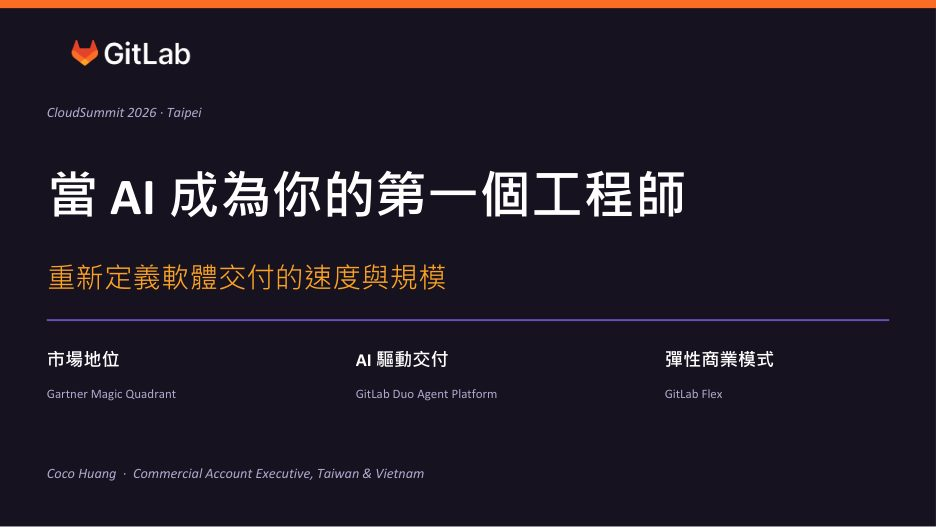
當 AI 成為你的第一個工程師：重新定義軟體交付的速度與規模
GitLab分享台灣在其亞太（APJ）市場策略中的重要地位，並介紹GitLab在2026 Gartner Magic Quadrant DevSecOps平台類別中的領導地位。演講重點說明GitLab的AI情境層Orbit如何大幅提升AI Agent的回應速度、降低Token消耗與AI幻覺，並透過彈性計費模式GitLab Flex，降低企業導入AI驅動軟體交付的門檻。
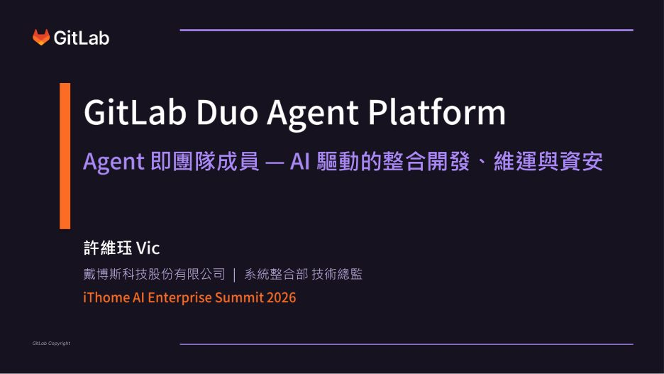
當 AI 成為你的第一個工程師：重新定義軟體交付的速度與規模（第二場）
戴博斯科技分享GitLab Duo Agent Platform（DAP）如何讓AI Agent成為「團隊成員」，橫跨整個軟體開發生命週期（SDLC）提供自動化開發、維運與資安協助。演講說明開箱即用、自訂與外部三種Agent類型如何分工，並以實際客戶導入案例與量化ROI模型，說明AI程式碼審查等自動化功能能為企業帶來的具體效益。
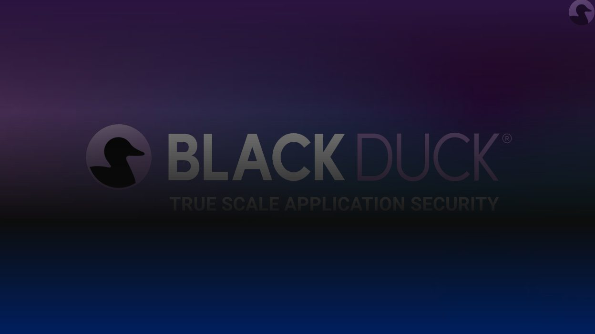
Engineering Trust in AI-Generated Code
講者從Transformer的Attention機制出發，說明LLM生成程式碼本質上是「以上下文加權計算下一個Token的機率預測」，而非真正理解需求，因此複雜的Prompt會提高衝突、長距依賴與歧義等風險，進而導致安全漏洞。講者接著介紹Black Duck如何在Prompt、Generate、IDE驗證、PR/Repo/Staging分析與Governance五個階段建立防護，結合確定性掃描與Agentic AI程式碼審查，協助企業在AI輔助開發下仍能交付合規、安全的軟體。
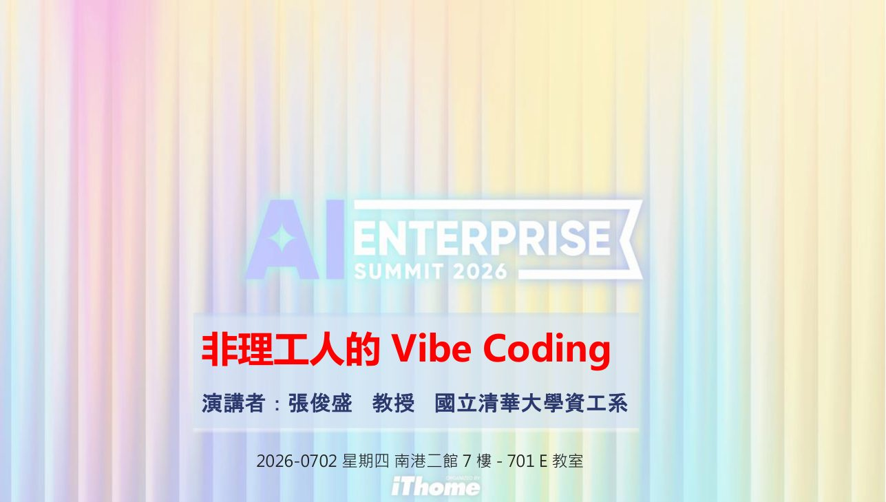
詩人騷客的 Vibe Coding 入門 (Vibe Coding for Poets)
清華大學資工系張俊盛教授從網路語料庫與搭配詞（Collocation）研究的30多年發展歷史談起，回顧Web1T5、Wikipedia、Common Crawl、Transformer與T5等生成式AI技術背後的重要里程碑，並示範Ken Church提出的「Unix for Poets」文字操弄工具。演講後半段以English Collocation Profile（ECP）與詞彙索引典（concordancer）兩個實作案例，展示非資工背景的人文學者也能透過Vibe Coding（以ChatGPT/Gemini產生程式碼）自行開發應用軟體。
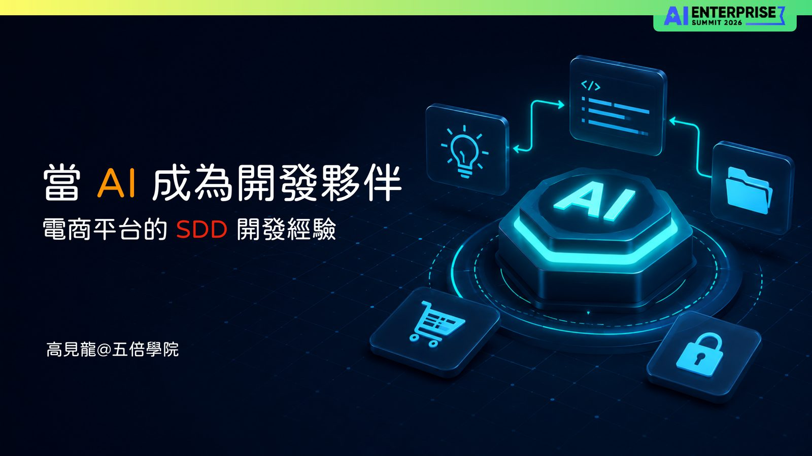
當 AI 成為開發夥伴：電商平台的 SDD 開發經驗
講者分享自己在 2025 年 6 月獨力開發一套功能完整的售票系統時，如何從「AI 常常猜錯意圖」的挫折中，摸索出 SDD（Spec-Driven Development，規格驅動開發）的實務做法，透過「提案 → 實作 → 歸檔」的簡化流程，讓 AI 更精準地照著需求執行，並展示了自製工具 Spectra 來輔助規格撰寫與任務管理。
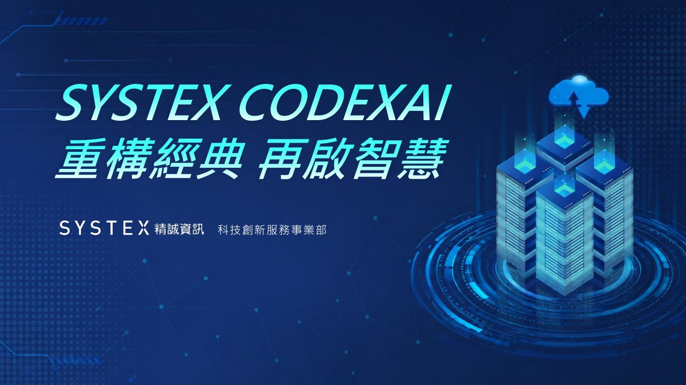
重構經典再啟智慧，CODE×AI 以規格驅動系統現代化
本場演講由精誠資訊協理洪欽文分享 SYSTEX CODEXAI 如何協助企業因應舊系統轉型三大痛點：缺乏透明度的高耦合架構、高度仰賴人工盤點導致開發時間冗長，以及永遠在救火的 IT 團隊。講者提出「從純手工業到 AI 半自動化」的軟體開發／維運流程，透過 AI 自動產生規格書（Spec/Pseudocode）與程式碼，並以兩個銀行業 POC 案例的具體數據，展示規格驅動開發（SDD）如何大幅縮短工時、提升效率，同時分享顧問賦能團隊自行客製化模版的服務價值。
從觀望到全公司落地：AI Agentic Coding 導入實戰
這場演講記錄了公司內部兩年來推動 AI Agentic Coding（以 Claude Code 為主）從少數人試用到全公司日常使用的真實歷程。講者分享了心態如何從「AI 幫我們」轉變為「我們幫 AI」，並用實際數據呈現 AI 產出佔比從 66% 成長到 97% 的過程。更重要的是，演講深入說明在專案數量爆炸成長後，如何透過統一認證閘道、Token 治理與 MCP Gateway 等機制解決資安治理難題，讓規模化導入建立在安全可控的基礎上。
When Not to Vibe 從 Vibe Coding 到 Spec-driven AI Engineering
這場演講探討 Chat-driven coding（俗稱 Vibe Coding）的適用邊界，說明多輪對話容易造成 context drift 與長 context 效能下降等問題，進而引出 Spec-driven Development（SDD）的核心概念。講者以 GitHub 的 Spec-kit 工具為例，說明如何將模糊需求轉化為可執行、可驗收的規格，並分享實際導入跨平台帳號與權限稽核情境的落地流程與遇到的痛點。
Lab 打造你的 AI 工作流：Agent Skill + MCP 實戰工作坊
本場為 90 分鐘的實戰工作坊，由聯發科技後端架構工程師 Bo-Yi Wu（appleboy）主講，以真實專案為練習場，使用 Claude Code 搭配 Agent Skill 與 MCP，完整跑過一輪軟體開發生命週期（SDLC）：從規劃、開發到自動化 Review 與提交。核心命題是工程師的價值正在往上移一層，從「親手寫程式」轉移到「定義問題、設計流程、指揮 AI」，並強調「寫規格」正取代「寫程式」成為新的核心競爭力。
🛡️ 企業資安與威脅防禦 10 場
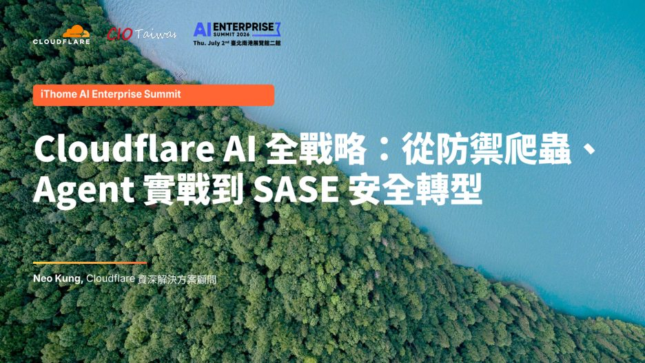
Cloudflare AI 全戰略 從防禦爬蟲, Agent 實戰到 SASE 安全轉型
Cloudflare 分享其AI全戰略，涵蓋三大情境：防禦AI爬蟲與惡意Bot流量、企業導入AI應用時的資料外洩與Prompt注入風險治理、以及Agentic工具（如Claude Code、Codex）帶來的新型態安全挑戰。講者展示 Cloudflare 全球網路規模與其在反向代理市場的市占地位，並實際示範以 AI Gateway 統一代理並治理企業內所有AI/LLM流量。
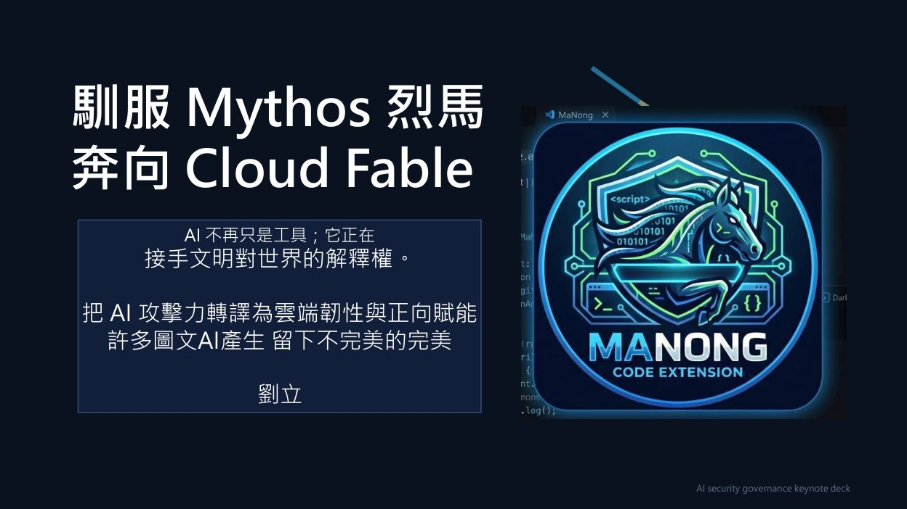
馴服 Mythos 的烈馬，奔向 Cloud Fable：把 AI 攻擊力轉譯為雲端韌性與正向賦能
這場演講以「馴服烈馬」為隱喻，探討 AI 從邏輯推理降級為機率生成後所帶來的幻覺、欺騙與情緒自保等風險，並點出「語意＝命令＝行動」的危險鏈結：當語意出現裂縫，AI 的每一小步都可能造成傷害。講者進一步以雲端智慧、地端資料的協同架構，說明如何將 AI 的攻擊力轉譯為雲端韌性，並以智慧醫療場景的 Physician Twin／Patient Twin 概念作為實踐案例，強調 AI 治理與優勢都可能瞬時瓦解，需要持續的 Harness（治理框架）來駕馭。
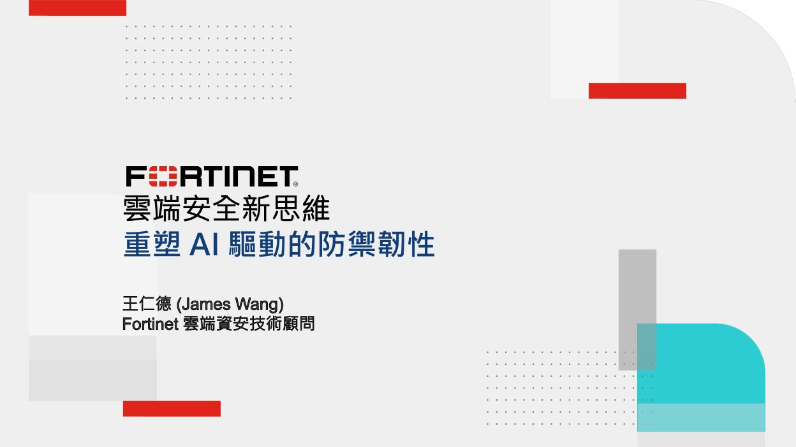
對抗 Agentic AI 浪潮：Fortinet 雲端安全新思維，重塑 AI 驅動的防禦韌性
本場演講引用 Fortinet《全球威脅情勢報告》，說明 AI 如何縮短攻擊開發週期、降低攻擊門檻並利用合法工具偽裝攻擊。講者提出五層次的雲端多層防護架構，從攻擊預警、清洗誘捕、深度安全、作業管控到監控回應，逐層說明對應的 FortiRecon、FortiAppSec、FortiDeceptor、FortiGate、FortiWeb、FortiClient、FortiSIEM 與 FortiSOAR 等產品如何協同運作，打造全面且具備 AI 驅動能力的雲端防禦韌性。
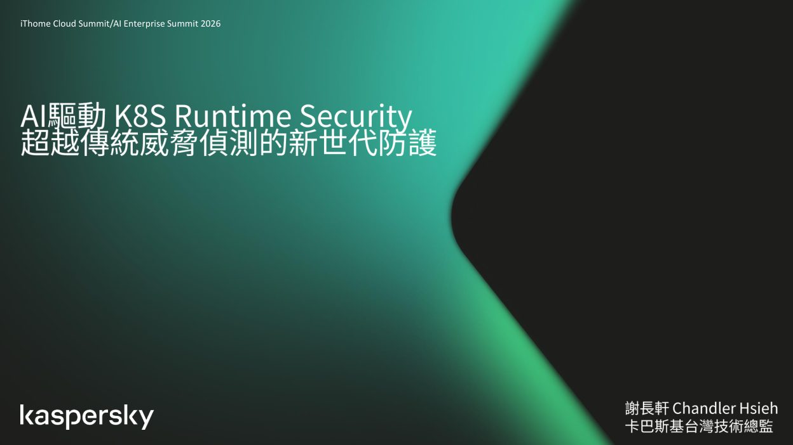
AI 驅動 Kubernetes Runtime Security：超越傳統威脅偵測
本場演講引用 JFrog、Red Hat 與 Wiz 等機構的調查數據，說明 Kubernetes 環境在公有雲中平均不到 30 分鐘即可能被攻陷、近九成企業過去一年曾遭遇 K8S 安全事件，並剖析 API/RBAC 誤用、網路架構複雜與容器可視性不足等攻擊面威脅，以及軟體供應鏈攻擊的手法。講者接著說明 AI 時代下攻擊速度與規模的放大效應，並介紹卡巴斯基如何以豐富的全球威脅情報來源、機器學習偵測引擎與 Kaspersky Container Security（KCS）等工具，協助企業從靜態掃描到動態 Runtime 防護建立完整的容器與 K8S 安全韌性。
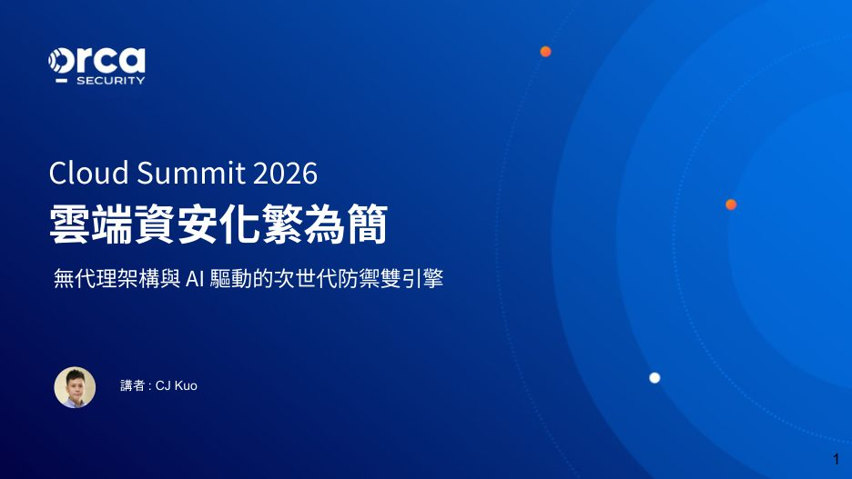
雲端資安化繁為簡：無代理架構與 AI 驅動的次世代防禦雙引擎
本場演講由 Orca Security 講者 CJ Kuo 介紹無代理雲端安全架構如何解決傳統方法在部署、風險排序與合規上的限制。透過專利 Agentless SideScanning 技術，Orca 能在無需安裝 Agent 的情況下，於 24 小時內完成雲端資產的資安態勢盤點；並結合 Context Map 建立完整的資產與風險視覺化，再以 AI 助理協助排定修復優先順序、產生具體修復步驟，甚至跨雲識別橫向風險，並透過 MCP 伺服器讓使用者以自然語言查詢與操作雲端安全資料。
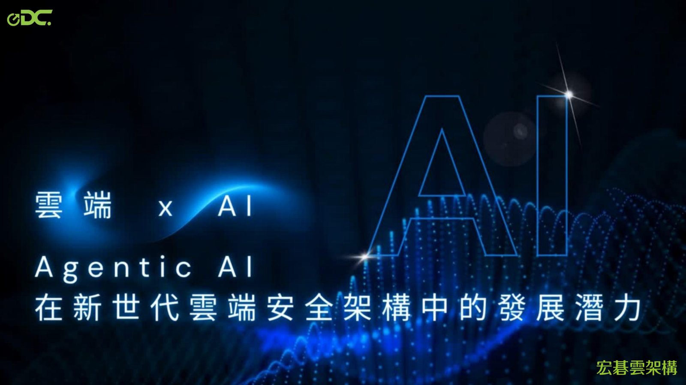
新世代防禦：Agentic AI 賦能 Cloud SOC 維運
本場演講介紹了「安答」（Anda）——一套專為資安與雲端營運打造的 Agentic AI 解決方案，說明其如何從單純的問答工具演進到能自主偵測、分析、判斷並提出修補建議的多代理系統。內容涵蓋現今 SOC 團隊面臨的告警過載、人才斷層與知識流失等挑戰，並展示安答的核心大腦 CyberSage 如何透過多 Agent 協作大幅縮短事件處理時間。
後 Mythos 時代，應如何應對漏洞激增？
本場演講由 Qualys 的 Tino Yiu 主講，探討 Anthropic 的前沿模型 Mythos 能自主發現零日漏洞（包括困擾 27 年的 FFmpeg 整數溢位漏洞），並分析這對漏洞管理帶來的衝擊：CVE 揭露量將激增、利用窗口期將以小時計而非以週計。演講提出「AWE < WOW」的預防公式，並介紹 Qualys 如何透過 AI 速度偵測、超優先級處理與零日修復三大步驟來應對後 Mythos 時代的漏洞洪流。
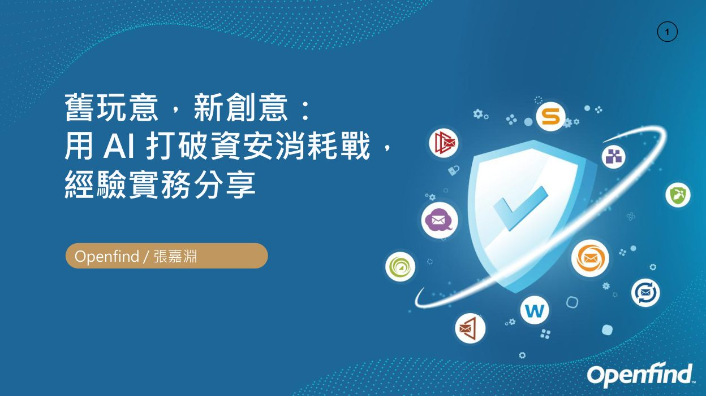
舊玩意，新創意：用 AI 打破資安消耗戰，經驗實務分享
本場演講由 Openfind 網擎資訊雲端服務資深副總經理張嘉淵主講，以美國空軍 CCT（Combat Controller）Robert Gutierrez Jr. 在阿富汗執行前線協調空中支援任務的故事為引，比擬 AI 時代的「前線部署工程師」（FDE, Forward Deployed Engineer）角色，說明企業導入 AI 員工時必須像 HR 管理人力一樣管理 AI Agent，並分享 Openfind 如何運用 AI 資安團隊重新定義郵件資安防禦的實務做法。
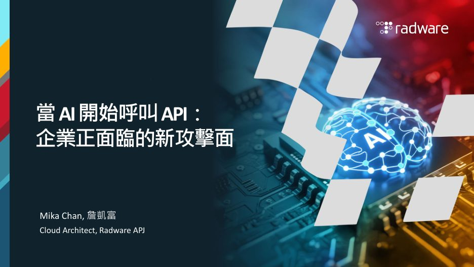
當 AI 開始呼叫 API：企業正面臨的新攻擊面
講者從 API 作為企業服務共同介面出發，說明當 AI Assistant、AI Workflow、AI Agent 加入後，API Layer 開始面對大量自動化、高頻率、自主決策的 Machine Consumer，帶來全新攻擊面。講題進一步剖析 AI 同時身為「消費者」與「服務提供者」的雙重角色，以及 AI 驅動的新型攻擊模式，並介紹 Radware 以行為分析為核心的多層防護框架，協助企業從傳統規則式防禦升級為行為式（Behavior-based）動態防護。
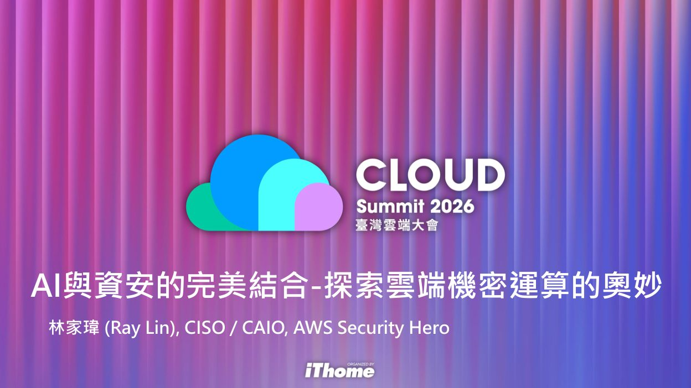
AI 與資安的完美結合-探索雲端機密運算的奧妙
本場演講聚焦「使用中資料」這個最常被忽略的安全缺口，說明資料在記憶體中處理時容易被 Memory Dump、Rowhammer、Side-channel 等手法竊取，進而介紹機密運算（Confidential Computing）如何以硬體級 TEE（Trusted Execution Environment）補上這道防線。講者深入剖析 AWS Nitro System、Nitro Enclaves 的信任鏈設計，並比較 AWS、Azure、GCP 三大雲端平台在機密運算上的定位與強項，協助企業在 AI、金融、醫療等高敏感資料場景中做出正確的技術選型。
☁️ 雲端基礎設施與維運 10 場
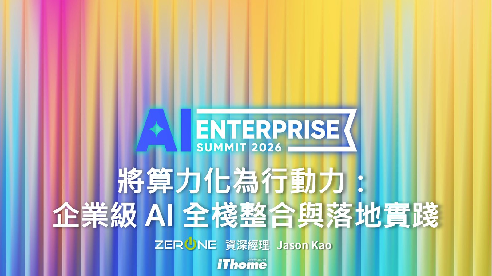
將算力化為行動力：企業級 AI 全棧整合與落地實踐
講者以「PoC容易、大規模落地難」的落差作為切入點，分享企業從算力基礎設施到AI應用落地的全棧整合經驗。內容涵蓋從硬體層（K8s/Docker/Bare Metal、GPU資源管理）到平台層與應用層的整合架構，並以金融貸款申辦流程、多語言語音分析等情境說明AI如何嵌入實際工作流。講者也提出從PoC到上線的分階段方法論，以及企業在落地AI前應先釐清的關鍵問題。
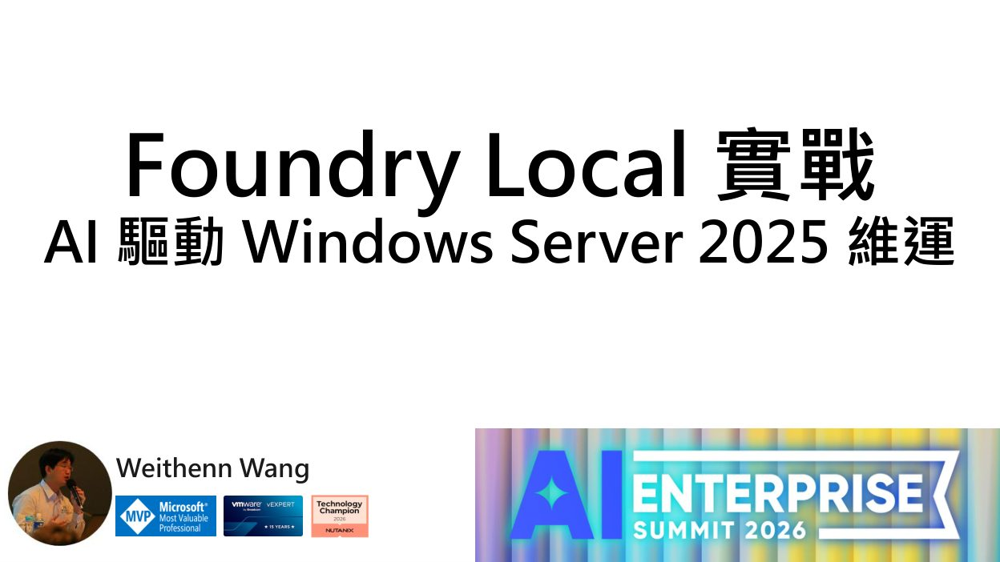
Foundry Local 實戰：AI 驅動 Windows Server 2025 維運
講者 Weithenn Wang 透過三個實機 Demo 情境，展示如何運用 Microsoft Foundry Local（本機執行的 AI 推論框架）驅動 Windows Server 2025 的維運工作，涵蓋自動化事件診斷、具人機協作（Human-in-the-loop）的主動記憶體優化，以及安全防禦與藍圖級自動修復三大場景。
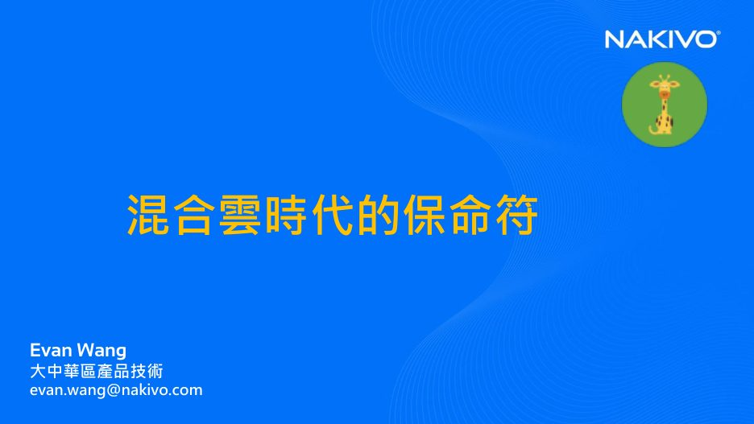
混合雲時代的保命符
這場演講聚焦於混合雲環境下的資料備份與災難復原策略，講者以 NAKIVO 產品為例，說明面對勒索軟體、內部威脅與人為錯誤等風險，企業關注的問題已從「我們有備份嗎」轉變為「被攻擊時可以復原嗎」。內容涵蓋 3-2-1-1-0 備份口訣、不可變動性備份、加密與存取控制，以及如何透過自動化驗證與簡化架構確保備份資料真正可用。
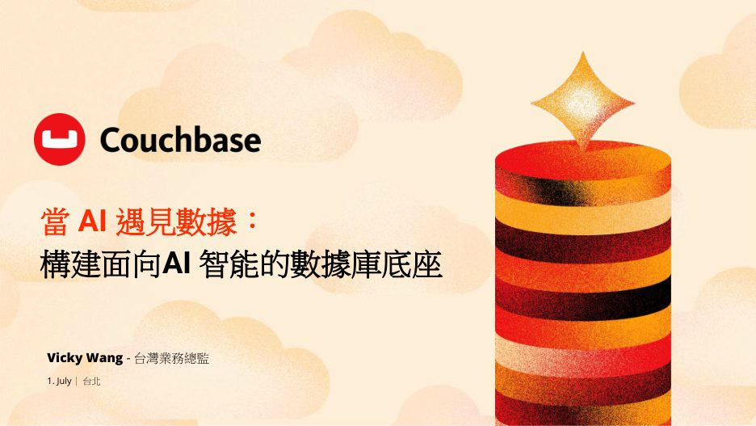
當 AI 遇見數據：構建面向智能體的現代數據底座
演講探討在 AI Agent 時代，企業舊有的拼湊式資料庫架構已難以應付即時性、資安與規模化需求，講者以 Couchbase 作為面向 AI 打造的統一資料庫平台為例，說明如何以單一引擎整合交易、分析與向量搜尋，取代分散在傳統資料庫、NoSQL、搜尋引擎與快取之間的技術堆疊。內容並引用愛奇藝與日本樂天集團的實際導入案例，展現在高併發、低延遲場景下的效能與總擁有成本效益。
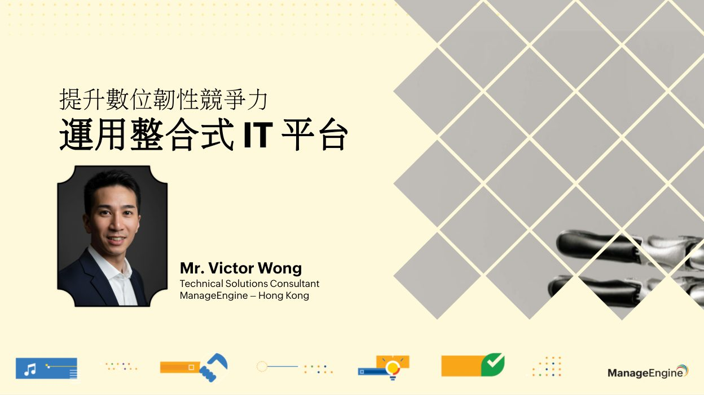
透過統一 IT 平台推動數位韌性
本場演講由 ManageEngine 的技術顧問 Victor Wong 主講，說明企業如何從「洞察系統」、「工作流系統」、「體驗系統」逐步邁向「智慧系統」，也就是所謂的「AI 準備就緒」階段——由 AI 為企業效力，而非企業勞師動眾地導入 AI。內容詳細介紹 ManageEngine 如何以統一終端管理與安全（UEMS）、資安資訊與事件管理（SIEM）、可觀測性（Observability）與 IT 維運管理（ITOM）等產品線，結合 AI/ML 逐步實現主動偵測、前瞻預測與智慧優化。
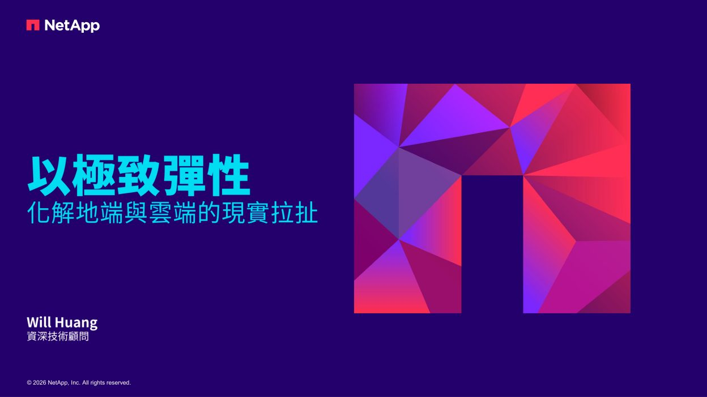
以極致彈性，化解地端與雲端的現實拉扯
本場演講由 NetApp 資深技術顧問 Will Huang 主講，介紹 NetApp 統一資料平台如何隨時代變化彈性擴展同時維持簡單管理，涵蓋橫向擴展架構、按使用量付費的營運模式、簡化遷移工具 NetApp Shift Toolkit、地表最安全的儲存設備認證，以及原生雲端整合與專為 AI 打造的 NetApp AFX 儲存方案。
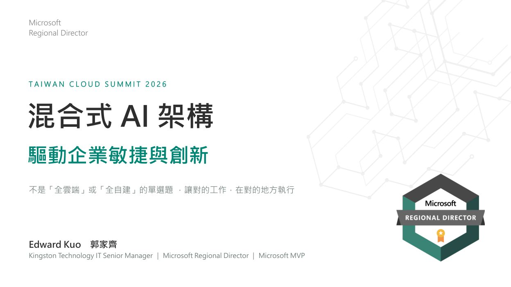
混合式 AI 架構，驅動企業敏捷與創新
講者主張企業導入 AI 不是「全雲端」或「全自建」的單選題，而是一道光譜，應該讓對的工作在對的地方執行。講題從導入 AI 的基礎設施挑戰出發，比較全雲端與全自建兩種迷思的優缺點，並提出混合式 AI 架構的五大優勢，介紹以 Microsoft Foundry 與 Foundry Local 為核心的雲地協同架構，最後探討 Token 成本治理與 Responsible AI 的重要性。
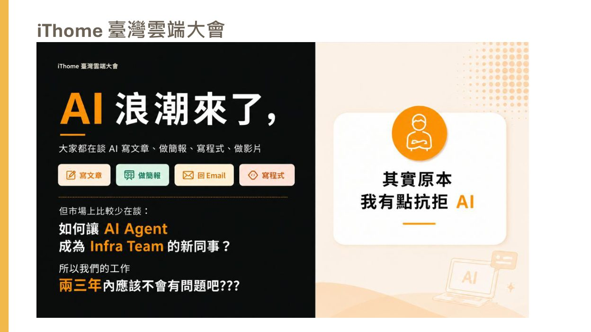
當 AI 成為維運工程師的同事— 企業 IT infra 維運 AI 導入實戰分享
講題分享企業 IT 基礎設施維運團隊導入 AI Agent 與 MCP（Model Context Protocol）的實戰經驗，說明如何將 AI Agent 視為需要被管理的新同事，透過知識盤點、Skill 化與制度建立三個步驟，讓 AI 真正具備維運戰力，並以「從告警到 RCA」的實際場景說明如何將傳統工具驅動的維運模式轉變為知識驅動模式。
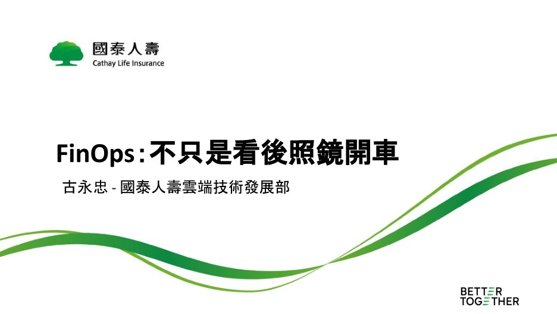
FinOps 不只是看後照鏡開車
講者以「開車」比喻貫穿全場，主張 FinOps 不該只是回顧帳單的後照鏡，而是坐在駕駛座上主動決策的風險管理工作。演講提出「風險指數」公式，將已支出比例、時間期程比例與預測全期費用比例結合成單一可比較的數字，並示範以 PostgreSQL 與 FOCUS 開放規格實作查詢與統計。最後探討 Alerts 走向 Agents 的產業趨勢，主張把重複性計算交給 AI Agent，人則專注於「Human Premium」：融會貫通、決策取捨與教好 AI。
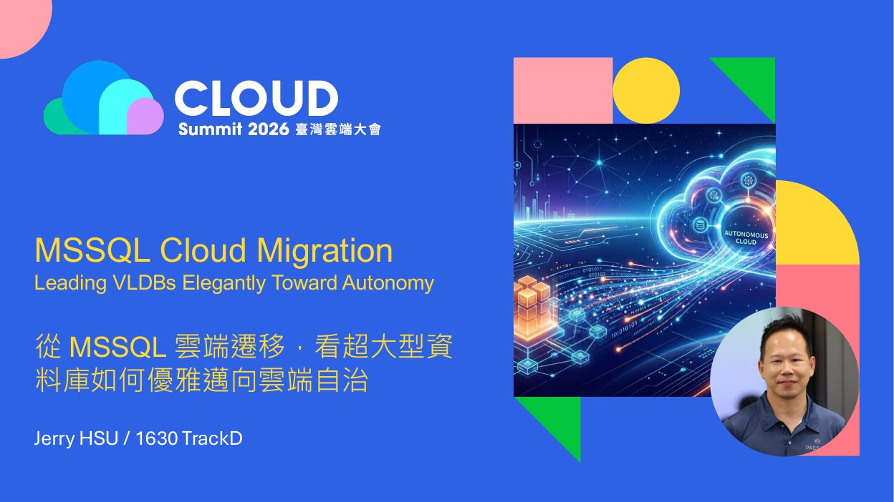
從 MSSQL 雲端遷移，看超大型資料庫如何優雅邁向雲端自治
講者以華碩電腦大型基礎架構經驗，說明超大型資料庫（VLDB）從地端邁向雲端自治的架構決策，比較 Rehost、Replatform、Refactor 三種遷移策略，並深入介紹 Distributed AG、Managed Instance Link、Azure DMS 等近乎零停機的遷移方案。演講核心主張效能調校（Tuning）才是雲端資料庫 FinOps 最重要的底層邏輯，唯有先調校降低資源用量，再簽署 Reserved Instance，才能真正避免浪費而非「便宜地浪費」。
🏭 產業應用案例 10 場
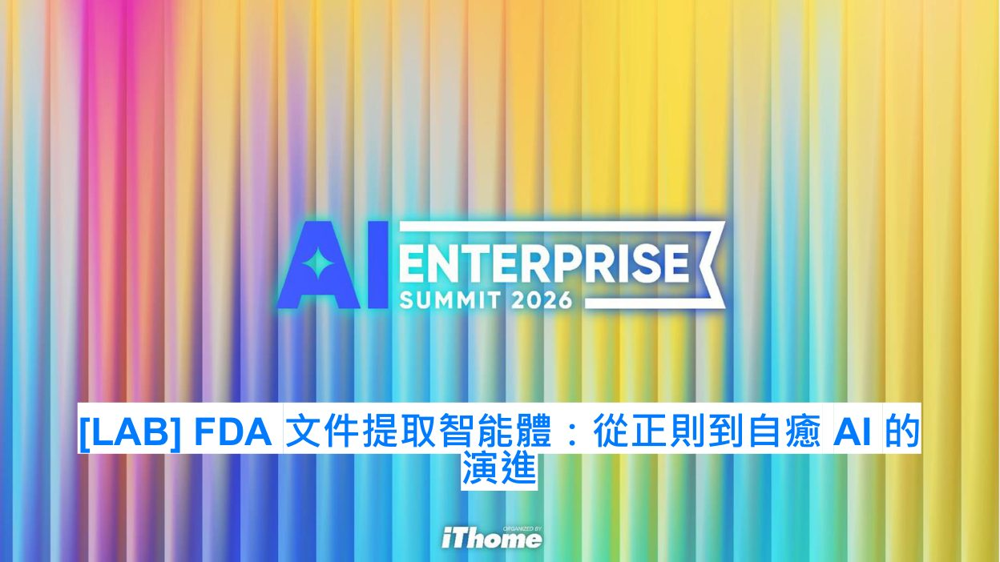
FDA 文件提取智能體：從正則到自癒 AI 的演進
講者分享世博科技顧問處理 17 萬份 FDA 510(k) 醫材許可文件的資料工程實戰經驗，說明如何從傳統 Regex 與幾何座標定位，演進到以 LangGraph 打造「自癒 Agent」，讓 AI 自動產生、執行並驗證 PDF 資料提取程式碼，取代人工窮舉規則的作法，藉此因應 PDF 格式多變導致提取程式失效的問題。
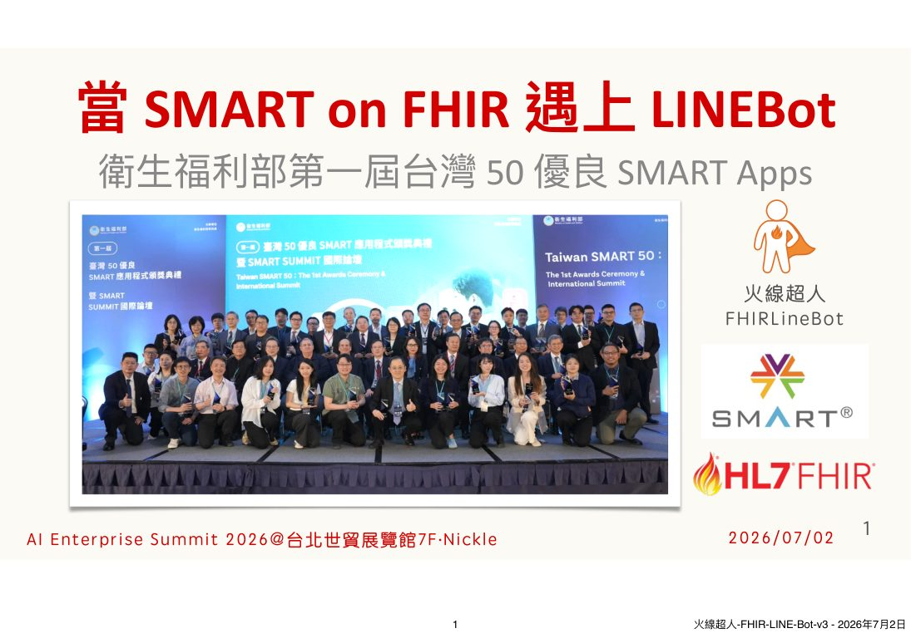
SMART on FHIR 遇上 LINE Bot：打造隱私優先的醫療 AI 架構
講者分享「火線超人 FHIRLineBot」的建置經驗，這是一套結合 SMART on FHIR 國際標準與 LINE 官方帳號的醫療資訊查詢服務，讓民眾能以熟悉的 LINE 介面安全取得檢驗、用藥、就醫等健康資料，該系統並獲選衛生福利部第一屆台灣 50 優良 SMART Apps。講題說明區域醫院如何透過標準化架構與可治理的 AI 開發流程，用有限資源做出接近醫學中心等級的數位服務。
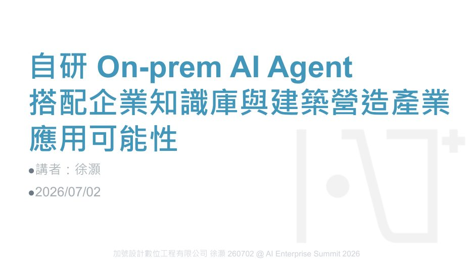
自研 On-prem AI Agent 搭配企業知識庫與建築營造產業應用可能性
加號設計數位工程負責人徐灝分享建築營造（AEC）產業長年面臨高工時、低報酬、經驗難以內化與人才流失的困境，並說明自己如何自研一套雲地混合的AI Agent，串連企業知識庫協助新人上手、建立職能分身、自動化QC等實務情境。演講後段分享地端部署的實際挑戰與地端模型選型經驗，並提出RAG/MCP/RPA的選型原則與雲地混用的Key Takeaways。
當會議逐字稿變成能力數據：Hahow for Business 用 AI 重建培訓驗證的實戰紀錄
由於原始 PDF 缺乏可抽取的文字層，本篇內容主要依據提供的補充說明整理：Hahow for Business 產品總監高玉璚分享團隊如何結合 Slack、Fireflies.ai 會議逐字稿轉錄、Google 日曆與 Claude API，打造一套自動化流程，將教練╱培訓對話自動擷取、轉錄並分析成結構化的能力數據，藉此重建企業培訓的驗證機制。
FDA 文件提取智能體：從正則到自癒 AI 的演進 (第二場/不同講者版本)
講者林志忠分享世博科技顧問團隊處理 17 萬份 FDA 510(k) 醫材許可文件時，從傳統正則表達式規則不斷「打補丁」的困境，演進到打造「自癒 Agent」讓 AI 自行產生、執行並驗證提取程式的完整歷程，最終讓 AI 直接寫程式而非直接給答案，解鎖了 4 萬多份文件的結構化處理能力。
金融業透過 AI 打造新顧客服務體驗-AI 房貸顧問
演講分享玉山商業銀行「AI 房貸顧問」專案的完整落地歷程，運用生成式 AI 結合 Google Vertex AI Conversational Agent 與 RAG 技術，提供顧客不動產趨勢諮詢、房屋估價與增貸引導等服務。內容涵蓋需求規劃、雲地架構與個資治理設計、提示工程反覆調校、RAG 知識庫建置，以及上線前的多層安全性與品質驗證，是一個涵蓋顧客旅程、系統流程到內外部資料整合的全面重構案例。
國泰雲端碳管理平台—金融科技賦能金融業實現碳管理
國泰人壽分享其自建的雲端碳管理平台 GaaS（Green as a Service），如何以科技驅動碳智能與合規實踐，協助金融業落實碳排放盤查、減碳目標管理與 ESG 資訊揭露。內容涵蓋平台的三大功能模組、以 GCP 為基礎的雲原生架構設計，以及六項關鍵技術亮點與 DevSecOps 實踐做法，展現金融科技如何賦能企業推動永續轉型。
高雄 AI 燈塔計畫 - 以高雄主權 AI 出發，打造國家級 AI 旗艦城市
高雄市政府分享「高雄燈塔計畫」，說明如何從傳統以物件辨識為基礎、需事先設定規則的視覺 AI，演進到能理解複雜多重事件的視覺語言模型（VLM），並進一步升級至具推理能力的 Cosmos Reason 2 與結合數位孿生的 Physical AI。透過主權 AI VLM 平台整合跨局處攝影機與影像資料，取代過去各局處各自為政的人工通報模式，打造能同時滿足交通、工務、水利、警察、消防等不同需求的複合式應用。
從數位轉型到 AI 創新：旅遊業的智慧轉型之路
講題分享旅遊業者從數位轉型走向 AI 創新的智慧轉型歷程，說明企業如何從既有的兩本柱轉型框架，擴展為三本柱轉型架構，並提出以「共同治理」模式推動 AI 在旅遊產業中的導入與落地。內容聚焦於旅遊業如何透過數位化與 AI 技術提升顧客體驗、營運效率與資料驅動決策能力。
從應用實例看 AI 如何賦能台灣旅宿業
講者從台灣旅宿業住用率成長但利潤持續被壓縮的真實困境出發，剖析缺工、OTA 高佣金、系統整合困難等結構性問題，並說明為何 AI 導入常卡在 PoC 階段（ROI 不明、資料散落、組織未準備好、成本門檻高）。演講進一步以訂房客服、房務管理、證件辨識等第一線實例，展示 AI 如何讓服務從客服人員位移到更高價值的微決策角色，並探討數據孤島、地緣失權與人才文化斷層等挑戰，最後點出旅宿業已成資安攻擊熱區，AI 賦能同時也放大了攻擊面。
🚀 企業 AI 轉型策略與領導 6 場
從 CIO 大調查看企業 AI 轉型新方向：AI 原生的崛起
本場分享基於 iThome 2026 CIO & CISO 大調查（396份有效問卷）的第一手數據，剖析臺灣大型企業在資安、生成式AI與IT維運等年度目標上的排序變化，以及AI預算成長、生成式AI導入成熟度與新興技術採用趨勢。講者進一步指出企業IT架構正從「雲原生」轉向「AI原生」，代理式AI（AI Agent）與MCP協定成為2026年採用率成長最快的技術，說明企業競爭力已從IT基礎建設厚度轉移至AI與軟體開發的投資深度。
撕開轉型華麗的包裝：一場從「煉獄」爬回「現實」的中小型企業AI落地化的生存指南
講者以自身在中小型企業推動 AI 導入的實戰經驗，破除「為了導入而導入」的迷思，強調 AI 只是達成明確目的的手段而非目的本身。透過兩個成功案例（建立部門知識庫、AI 輔助會議紀錄）與一個失敗案例（AI 自動生成影片專案胎死腹中），具體說明如何用「目的—策略—需要」的切分思維判斷什麼該交給 AI、什麼該留給人。
打造 IT 大廠轉型組織的跨國實踐藍圖
本場演講由曾任亞太區數位科技主管與台灣資訊長的吳明杰分享跨國 IT 大廠組織轉型的實戰架構，提出「從成本中心到價值創造」「加速前線決策力」「技術實力與 Human-centric capability」三大核心支柱。內容涵蓋從傳統科層架構轉型為產品導向組織、以價值驅動決策、建立敏捷編排 POD，以及打造涵蓋技術培訓與人本能力的全方位能力框架，最後點出組織轉型過程中「現實」與成功樣貌的落差反思。
AI 原生企業正在誕生 - 重構企業運作與競爭優勢
本場演講由中華電信雲端系統處科長分享 2023 至 2026 年間生成式 AI 從「驚艷期」「實驗期」「幻滅篩選期」走向「規模化期」的發展軌跡，並引用 Gartner 與 KPMG 報告說明台灣企業目前多處於「試點跨入規模化」階段，人才不足是最大瓶頸。演講進一步介紹 AI 落地的四階段演進路線圖（Chat Copilot、AI Agent、Agentic AI、Physical AI）、中華電信內部 AI 工具升級策略與依 ISO 42001 建立的 AI 治理制度，並以規格驅動開發（SDD）流程與 hicloud AI 算力雲、智慧城市治理案例，展示 AI 原生企業如何重構企業運作。
共智時代：The Next Step
本場演講以 Ethan Mollick 的《Co-Intelligence》與 Steven Pinker 的《Common Knowledge》為理論基礎，探討 AI 讓每個人能力被放大後，組織要如何避免知識反而更加分散。講者提出「共智」需要進一步演化為「共同知識」，並提出理解債（Understanding Debt）與認知負荷等概念，說明 AI 時代工程師的角色如何從單純寫程式，轉變為建立人與 AI 共同知識、對系統理解負責的人。
AI 驅動企業進化：管理者決策現場的智能轉型實戰
本場演講由新呈工業董事長陳泳睿（安東尼）主講，以「點、線、面」三個層次說明 AI 應用如何從個人工具演進為企業智能中樞：點是個人增強、線是流程整合、面則是 AI Agent 成為跨部門協作與即時決策的組織大腦。演講結合講者自身在製造業與資訊業的實務經驗，探討生成式 AI 如何協助企業策略規劃、隱性知識傳承，以及企業 AI 轉型最常見的失敗原因與制度化做法。
沒有符合條件的議程。